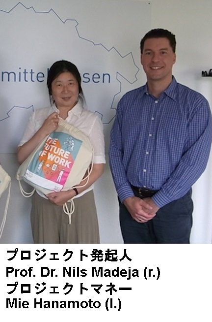
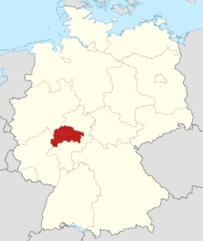

DIGIMARI - dejimari
Digital Manufacturing Research Initiative
プロジェクト
 o ミッテルヘッセン工科大学は、ドイツ連邦教育研究省の支援の下、企業のデジタルトランスメーションを推進するためのプロジェクト „Digital Manufacturing Research Initiative“ (略称 „DIGIMARI“、日本語名称「デジ真理(まり)」)を開始しました。プロジェクトパートナーは、ギーセン大学とマールブルク大学、リージョナルマネジメント・ミッテルヘッセン、ならびに地域の３０の企業で構成される連盟「スマート・エレクトロニック・ファクトリー」です。さらに日独産業協会も協力の意を表明してくれました。「デジ真理」は、ドイツ連邦教育研究省のキャンペーン「ザ・フューチャー・オブ・ワーク」への参加を認められたプロジェクトです。１年半の実施期間中に、産業基盤のとりわけ強固な関西地方にパートナーを獲得し、日独で力を合わせてデジタルビジネスモデルや革新的デジタルプロセスの開発、ノウハウ移転を行うことを目指しています。
ミッテルヘッセン産学ネットワーク
o 研究と産業の各分野から実力あるメンバーが集まり、ミッテルヘッセン産学ネットワークを形成しました。
パートナー:
- スマート・エレクトロニック・ファクトリー(SEF) 約30の電機産業事業所と研究機関により構成される連盟
- リサーチキャンパス・ミッテルヘッセン(FCMH) ミッテルヘッセンの3大学により構成される連盟
- リージョナルマネジメント・ミッテルヘッセン 基盤は250以上の事業所、機関、自治体と個人

Leistungsangebot und Zielsetzung
 「デジ真理」はドイツのミッテルヘッセン地方で立ち上げられたプロジェクトです。製造業における中小企業のデジタルトランスフォーメーションを推進するため、ミッテルヘッセン地方と日本の関西地方を結ぶイノベーションプラットフォームの構築を目指しています。日本とドイツそれぞれの良さを生かして、未来への一歩を踏み出しませんか？
プロジェクト「デジ真理」について 正式名称は「Digital Manufacturing Research Initiative(デジタルマニュファクチャリング・リサーチ・イニシアチブ)」。ドイツでは略して「DIGIMARI(ディギマリ)」と呼ばれています。日本の皆様には「デジ真理(まり)」の名称で親しんでいただければ幸いです。 (仕事の未来)」への参加を認められたプロジェクトです。同省の支援の下、2019年6月1日から2021年11月30日までの間、実施されます。 プロジェクトの指揮を執るのはミッテルヘッセン工科大学です。パートナーであるミッテルヘッセン産学ネットワークが強力に支援します。 プロジェクトの目的は？ 製造業におけるデジタルトランスフォーメーション推進のため、ドイツのミッテルヘッセンと日本の関西地方を結ぶ産学ネットワークの構築を目指します。 具体的には何をするの？ 日独インダストリー4.0 / IoT コロキウム
PROJEKTINFORMATION
- Federführung beim Projekt
- ミッテルヘッセン工科大学 経営学部
- プロジェクトマネジメントオフィス所在地
- Giessen, Germany
- ドイツ国内のパートナー
- ミッテルヘッセン産学ネットワーク
- リジョナルマネジメント・ミッテルヘッセン
- スマート・エレクトロニック・ファクトリ
- 対象国
- 日本